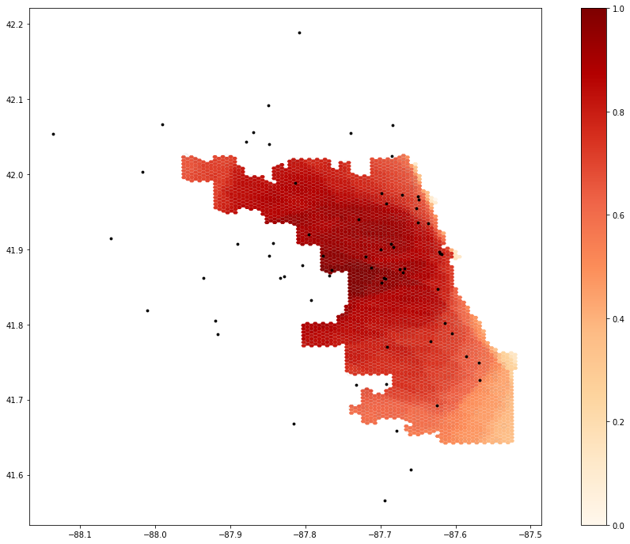

home GIS musings cartography
| aboutOriginal study by Kang, J. Y., A. Michels, F. Lyu, Shaohua Wang, N. Agbodo, V. L. Freeman, and Shaowen Wang. 2020. Rapidly measuring spatial accessibility of COVID-19 healthcare resources: a case study of Illinois, USA. *International Journal of Health Geographics* 19 (1):1–17. DOI:10.1186/s12942-020-00229-x.
Replication Author: Hannah Rigdon
Replication Materials Available at: hrigdon/RP-Kang
Created: 19 May 2021
Revised: 26 May 2021
The purpose in this study was to replicate the analysis conducted by Kang et l (2020), which sought to rapidly map the distribution of healthcare resources as a means of assessing accessibility to healthcare during the COVID-19 pandemic. Their study sought to answer to what extent Illinois residents have access to resources during COVID-19, which geographic areas are underserved or overserved, and to what extent accessibility can be associated with other socioeconomic and demographic factors. COVID-19 has brought to light the enormous health disparities in this country, and Kang et al seeks to contribute to combatting this inequality by harnessing the capabilities of cyberinfrastructure to conduct computationally efficient, rapid analyses.
This analysis used the Jupyter notebook that was published with the paper, as well as the associated python packages, hosted on the cybergisx platform. The analysis used a two-step floating catchment area method, which measures accessibility from the centroid of a zipcode to hospital locations based on a road network analysis. This analysis focused on ICU beds and ventilators, which are crucial to treating COVID-19, as a means of quantifying healthcare services. The population data was sourced from the US census, the road network from Open Street Maps, and the hospital data was provided by the Illinois Department of Public Health. The analysis had two main steps- calculating an ICU bed, or ventilator bed- to population ratio for each hospital location, and then summing those where hospital regions overlap (Kang et al 2020, 5). The hospital catchments were calculated as convex hulls, and the results of the accessibility analysis were summed into a grid of hexagons. Their analysis also accounted for differences in travel times, and weighted travel zones of 10, 20, and 30 minutes.
For the most part, the replication used the exact same code from the Jupyter notebook, with the exception of a few changes. The Kang et al analysis pulled road network data from within Chicago, but included hospitals outside of the city. As a result, when hospitals outside Chicago were paired with the nearest node of the road network, their locations were moved to be inside Chicago, which is pretty misleading. We adjusted for this by adding a buffer distance to the road network. We made the following changes to the “Load and Plot the Street Network” chunk of the code.
if not os.path.exists("data/Chicago_Network_40000.graphml"):
G = ox.graph_from_place('Chicago', buffer_dist = 40000, network_type='drive') # pulling the drive network the first time will take a while
ox.save_graphml(G, 'Chicago_Network.graphml')
else:
G = ox.load_graphml('Chicago_Network.graphml', node_type=str)
ox.plot_graph(G)
I also changed the weights of the model to test the sensitivity of the model. The Kang et al paper didn’t explain their reasoning for the assigned weights and so I changed them to 1.0, 0.85, and 0.5, respectively, to get a sense of how much the weights were influencing the model.
Figure 1.1 shows the outputs of the original study.

Figure 1.2 shows the outputs with the modified weights.
It is a little difficult to assess the results of the weight change without knowing the reasoning behind the initial weight values, However, as you can see in the figures below, the results of the model did change somewhat significantly. You can see how access in the southern part of the city seems to be much higher with these weights, as well as the western edge of the city, in general. This suggests that the model is somewhat sensitive to the weights allocated to the different travel zones, which means that it is important to think critically about what weights are being assigned to each zone and why. Additionally, Chicago is just like every other city in that its geography of access is not just defined by road networks and physical distances, but by other factors, like race, transit accessibility, and socioeconomic factors, that this model does not entirely take into account. However, this analysis highlights the importance of reproducing studies like these. Oftentimes, there are aspects of analysis that aren’t always made clear or rigorously interrogated that end up having significant impacts on the results. The replication of this study found a few errors in this study that had tangible implications for the results of this analysis. Especially when dealing with issues of healthcare resource allocation and accessibility, it is important that analyses like Kang et al are overly transparent and clear in their work to make sure that their results can be appropriately interpreted.
Our ability to replicate the Kang et al analysis is significant progress in the push for more reproducible and replicable GIScience. It is significant they included so much of their code in their publication so that others can get a clear understanding of the methods of their analysis. Our replication found a few inconsistencies in their analysis that could be improved upon. In addition to the changes mentioned above, there was some uncertainty about which exact data sets they used for their analysis. However, compared to other studies we have attempted to replicate, this one was by far the easiest. Because they were so clear and transparent with their methods, we were able to really dig into them to understand them and improve them, instead of taking blind stabs in the dark at what we thought the analysis would have looked like.
Kang, J. Y., A. Michels, F. Lyu, Shaohua Wang, N. Agbodo, V. L. Freeman, and Shaowen Wang. 2020. Rapidly measuring spatial accessibility of COVID-19 healthcare resources: a case study of Illinois, USA. International Journal of Health Geographics 19 (1):1–17. DOI:10.1186/s12942-020-00229-x.